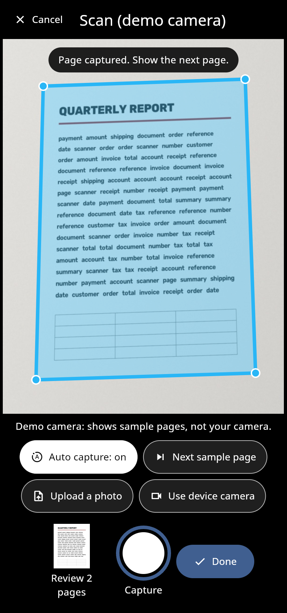
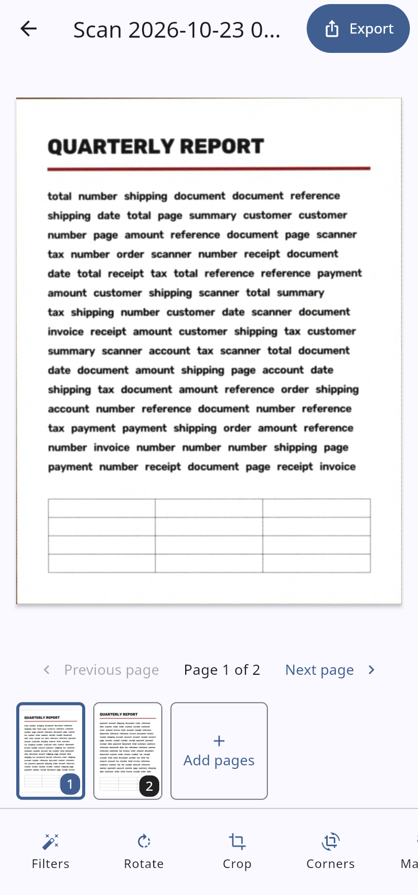
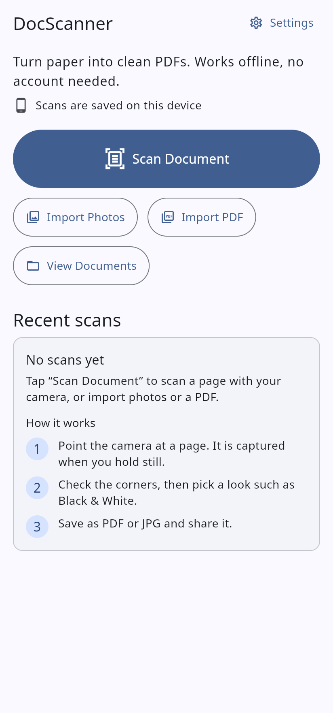
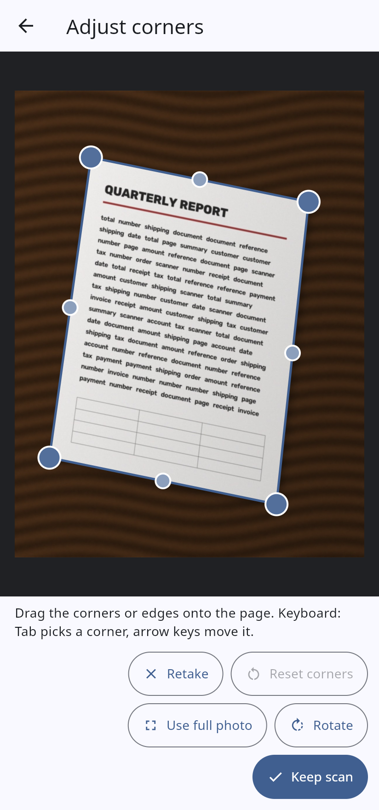
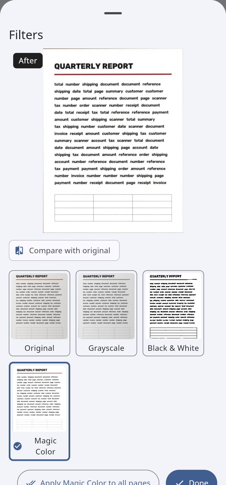
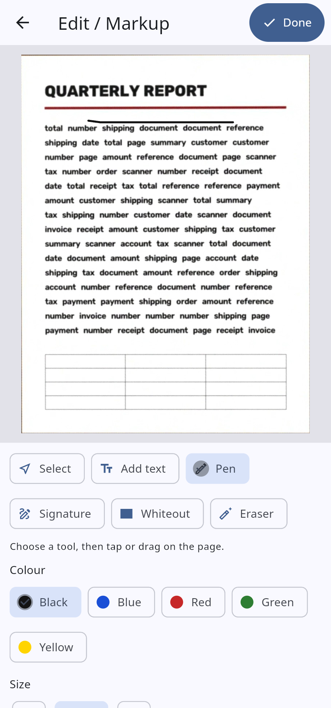
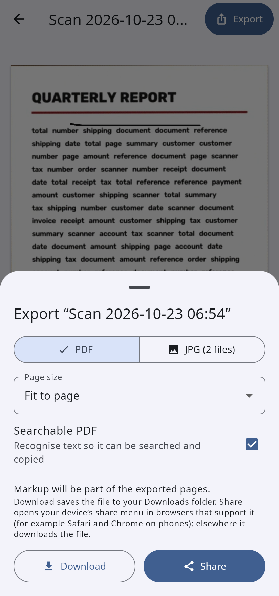
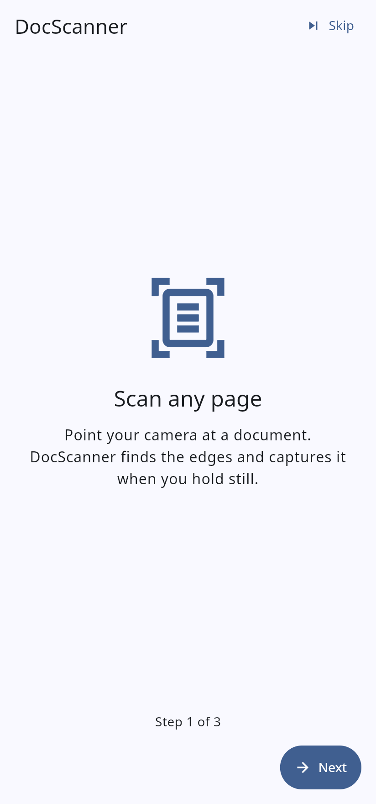

Scan paper into clean PDFs
Point your camera at a page. DocScanner finds the edges, captures it when you hold still, flattens it and cleans it up. Works offline and without an account, on phones and in the browser.
“Try it now” opens the real web app. It asks for your camera; if you have none, choose “Upload a photo”. The demo camera shows built-in sample pages instead of your camera.


What you can do
Scan with the camera
Live page outline, auto-capture when steady, spoken and vibration guidance (optional).
Fix the corners
Drag corners or edges, or use the keyboard. “Use full photo” when there is no page.
Pick a look
Original, Grayscale, Black & White, Magic Color, with a before/after compare.
Add text and markup
Text, pen, highlighter, signature, shapes and whiteout. Editable until you export.
Find the text
Text recognition in English and Hindi, copy the text, searchable PDFs.
No account needed
Everything is stored on your device. Signing in only adds backup and sync.
Screenshots
Taken from the real web app by an automated script (tools/audit/screenshots.mjs). The pages shown are the app’s built-in sample documents.






Built with
Flutter (Android, iPhone, web) · OpenCV (on the device: opencv_dart; in the browser: opencv.js) · ML Kit and Tesseract.js for text · FastAPI, PostgreSQL and MinIO for the optional backup. Feature list and status · Latest test results.